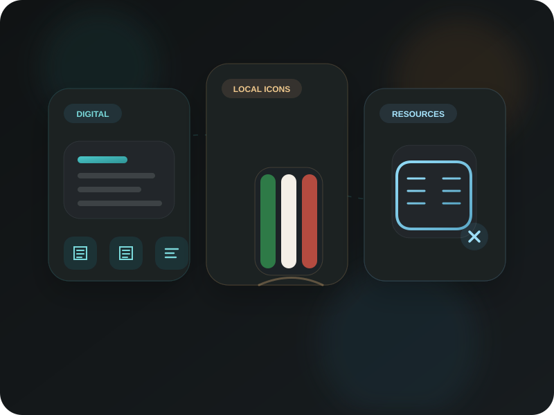

Explore privacy-first web tools, iconic experiences in Alessandria and Monferrato, and a practical wiki of manuals, notes, and curated resources.

Browse the website by lane
Privacy-first browser tools for PDFs, QR codes, media workflows, and developer utilities.
Open digital servicesIconic local experiences rooted in Alessandria and Monferrato, starting with the restored FIAT 500 L.
Explore local iconsWiki pages, manuals, curated notes, and personal utility resources collected in one place.
Browse resourcesA growing collection of private, browser-based digital services for hospitality, productivity, media, and developer workflows.
Featured Direction
Use browser-based services for documents, QR workflows, video utilities, and developer tasks without sending files to a server.
Quickly combine multiple PDF files into a single document. Perfect for merging documentation, reports, receipts, or manuals with complete privacy.
Reduce PDF file size directly in your browser with privacy-first compression designed for sharing scanned documents and lighter file delivery.
Convert JPG, PNG and other image formats to PDF. Combine multiple images into a single document with our client-side processing technology.
Transform your videos by adjusting playback speed. Create dramatic slow-motion effects or speed up footage for time-lapse videos without uploading your content.
Create customizable QR codes for URLs, text, Wi-Fi networks, and contact information. Perfect for hospitality businesses, restaurants, and events.
Scan and decode QR codes using your device's camera or by uploading images containing QR codes. Fast and private QR code reading.
Fast and simple subnet calculator for network engineers and administrators. Calculate network addresses, broadcast addresses, and IP ranges effortlessly.
Try CIDR CalculatorInstantly format and beautify your code with support for HTML, CSS, JavaScript, and more. Keep your code clean and readable with our browser-based formatter.
Format Your CodeEncode and decode text or binary data as Base64. Useful for encoding and decoding data for web applications, APIs, and storage solutions.
Try Base64 ToolArchive websites by saving HTML, CSS, JavaScript, and images into a downloadable ZIP file. Perfect for creating local copies of important resources.
Try Website ScraperExperiences rooted in the Italian city of Alessandria and the Monferrato area, designed to grow over time under one umbrella. The restored 1971 FIAT 500 L is the first iconic experience in this collection.
Featured Direction
Local experiences are positioned as memorable, visual, and story-driven services tied to Alessandria city and the wider Monferrato landscape.
An authentic restored FIAT 500 L available for weddings, anniversaries, celebrations, tourism experiences, and memorable arrivals in Alessandria, Monferrato, and selected Piedmont locations.
A separate lane for knowledge, documentation, utility pages, and curated personal resources, so the site can grow without mixing service pages and reference pages together.
Featured Direction
This lane collects technical guides, notes, manuals, and structured pages that support both search discovery and repeat visits.
Explore a structured wiki with quotes, curated resources, and practical notes that are useful beyond the service pages themselves.
Open the Knowledge WikiTechnical and historical material for owners and enthusiasts, including maintenance, diagnostics, originality checks, and buying guidance.
Browse FIAT 500 ResourcesWe take your privacy seriously. Here's why our tools are different:
All computations happen directly in your browser. Your files and data never leave your device.
We don't store your files, QR codes, or any other data. Everything is processed locally and then forgotten.
Our code is transparent and available for inspection. You can verify exactly how your data is being processed.
The site is designed to support different audiences across both digital and local service areas:
Create QR codes for menus, Wi-Fi access, and contact information. Merge PDFs for information booklets and promotional materials. Create slow-motion videos for promotional content.
Combine multiple PDF documents for course materials. Generate QR codes for quick access to online resources. Create time-lapse videos of experiments or processes.
Use the CIDR calculator for network planning. Format code and manage documentation with our developer tools. Archive important web resources with the Website Scraper.
Create professional documentation by merging multiple PDFs. Generate QR codes for marketing materials and contact information. Create engaging speed-adjusted videos for social media.
Use the local FIAT 500 service for weddings, editorial shoots, tourism storytelling, and memorable vintage experiences in Alessandria and Monferrato.